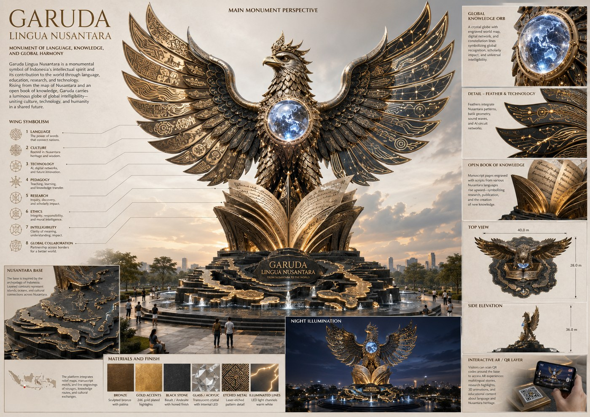
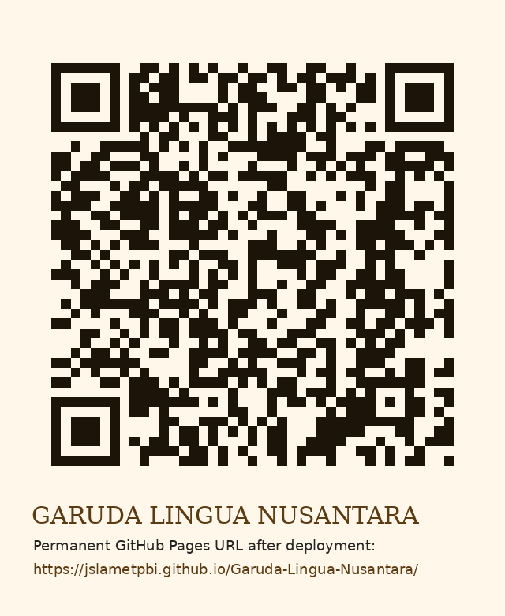

Nusantara Archipelago Base
A dark stone podium shaped through abstract island contours, coastal lines, and layered terraces, symbolizing Indonesia’s plural cultural geography.
Karya Seni Monumental Dosen Bereputasi Internasional
A research-based monumental artwork expressing Indonesia’s intellectual dignity through Garuda, Nusantara heritage, global intelligibility, English Language Teaching, AI-supported learning, and scholarly innovation.

Executive Concept
Garuda Lingua Nusantara is designed as a scholarly public artwork: a majestic Garuda rising from an open manuscript and the archipelagic base of Indonesia. It visualizes the journey from local linguistic heritage to global academic contribution, making the monument both culturally rooted and internationally legible.
Visual Architecture
The monument is structured as a readable visual narrative from land, language, and scholarship toward global recognition.
A dark stone podium shaped through abstract island contours, coastal lines, and layered terraces, symbolizing Indonesia’s plural cultural geography.
Large manuscript pages rise from the base, carrying engraved multilingual scripts, research lines, and publication motifs.
The Garuda emerges from knowledge rather than domination, representing wisdom, responsibility, protection, and intellectual leadership.
A luminous globe at the chest represents global intelligibility, worldwide scholarly networks, and international recognition.
Eight symbolic feather lines encode language, culture, technology, pedagogy, research, ethics, intelligibility, and global collaboration.
Subtle circuit lines, sound waves, and constellation paths connect the wings, showing technology-enhanced language education.
Warm gold and cool blue lighting transform the sculpture into a visible public symbol of knowledge after sunset.
Garuda–Nusantara Nuances
National dignity, courage, intellectual protection, moral responsibility, and the flight of knowledge from Indonesia to the world.
Archipelagic identity, linguistic diversity, cultural plurality, maritime routes, local wisdom, and inter-island knowledge exchange.
Pronunciation, intelligibility, accent diversity, ELF communication, and the right of Indonesian voices to be heard globally.
Publication, academic authorship, peer review, scholarship, teaching, and the transformation of inquiry into public contribution.
AI literacy, AR learning, digital humanities, technology-enhanced pedagogy, and data-informed educational innovation.
Global recognition, universal intelligibility, international collaboration, and scholarly impact beyond national boundaries.
Conceptual Specification
Visitor and Academic Experience
Visitors encounter the large-scale Garuda structure, Nusantara base, manuscript reliefs, and illuminated knowledge orb.
The monument is presented through a web-based visual archive that can be accessed internationally.
Regional Indonesian voices pronounce short English and Indonesian lines to communicate ELF intelligibility and cultural plurality.
QR points open AR overlays, research explanations, publication highlights, and educational stories behind each monument part.
International Academic Dossier
Dr. Joko Slamet is positioned as the conceptual scholar behind the work, connecting English Language Teaching, ELF pronunciation, intelligibility, ESP, AI-supported learning, AR/digital learning, research ethics, and publication culture.
“From Nusantara to the world: a monument where Garuda carries language, culture, technology, and scholarly integrity into global dialogue.”
Permanent Link Package
Use the repository name below to obtain the proposed permanent project URL.
Garuda-Lingua-Nusantara
https://jslametpbi.github.io/Garuda-Lingua-Nusantara/
